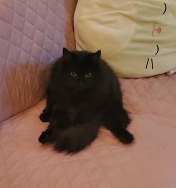

Alyssa Holbert
My favorite animal is the cat. I love all cats, but I particularly love the following breeds/varieties:
- Weird looking ones, like the Sphinx and
Lykoi breeds
- Black cats of all kinds, purely because they are witchy.
- British Shorthair cats. They are pudgy and their round little faces and huge eyes make them look like owls.
- Ragdoll cats. One of my favorite pandemic discoveries was the sheer amount of Korean YouTube channels run by ladies that own entire herds of spoiled, lazy Ragdoll cats.
- My cat, Boo, a barn cat mutt of indeterminate lineage and questionable intelligence. (photo below for reference)
